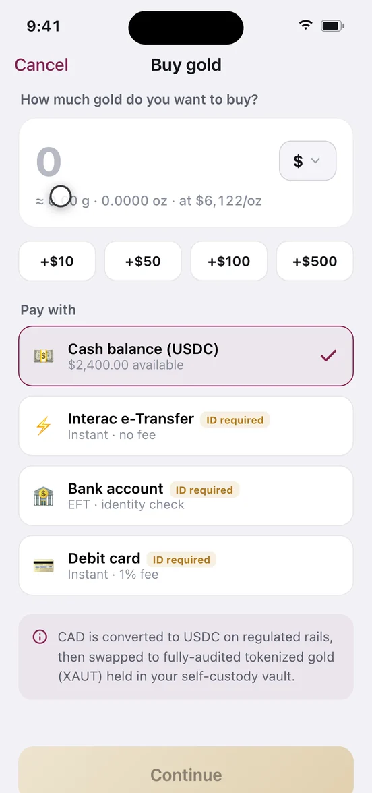

Buying gold
Buying gold in Auri converts money you already hold into tokenised gold that lands in a vault only you control. When you finish you own a specific weight of gold — divisible to a millionth of a troy ounce — that you can hold, send, gift or borrow against without selling. This page covers the flow tap by tap, what it actually costs, what you end up owning, and when buying is the wrong move.
Why people do this
Most people buy for one of three reasons: they want savings held in something other than their home currency, they want a hard asset without a safe or a dealer, or they want gold they can later borrow against instead of selling. Gold pays you nothing while you hold it — that trade-off is the whole decision, and it is unpacked in why people buy gold below.
Before you start
- An Auri account. No ID is needed to open one — see getting started.
- A funding source: your Auri cash balance (USDC), a bank rail, or a debit card.
- An identity check only if you fund with a bank rail or debit card and have not verified yet. Funding with USDC you deposit yourself is tagged No ID.
- Minimum purchase:
UNKNOWN— the buy screen displays none. Auto-Invest states a US$10 per-cycle minimum.
Cost, time, reversibility. About a minute to enter · 0.49% of the purchase, plus 1% if you fund by debit card · network fees covered by Auri · settles instantly from your cash balance, in minutes by Interac e-Transfer in Canada, in 1–2 business days by bank transfer · irreversible once you confirm. There is no cancel button; to undo a purchase you sell the gold back and pay the fee again.
Buy gold, step by step
- Open the buy flow. On Actions, under the Gold group, select Buy gold. It is also on the Home card and in the move-money menu.
- Enter the amount. Type a figure and pick the unit — Dollars, Grams, Ounces or XAUT. Chips add +$10, +$50, +$100 or +$500. A live line shows the equivalence: ≈ 7.108 g · 0.2285 oz · at US$4,376/oz.
- Choose how to pay. Pick Cash balance, Interac e-Transfer, Bank account or Debit card. Each row is tagged with its speed, its fee, and whether it needs ID.
- Clear the identity check if prompted. Legal name and date of birth, a photo of your passport or licence, then a selfie. It resolves in about a minute and returns you to the review screen you were heading for.
- Read the review screen line by line. It is the only place the fee and the gold you actually receive appear together. Check Gold received against the equivalence line from step 2 — they differ, on purpose, by the fee.
- Confirm. Cash-balance buys execute immediately. Fiat-funded buys open a Processing screen with a live step list that you can minimise into a background pill; it finishes on its own and fires a notification.
- Check the proof block. The success screen reads Gold purchased — 0.2274 oz added to your vault and carries the Arbitrum block number and transaction hash, a View on Arbiscan link, and an Advanced toggle revealing the receiving vault address.
Switching units
The dropdown changes what you type, not just what you read: 5 in Grams buys five grams whatever that costs today, 5 in Dollars buys five dollars' worth. Gold trades in troy ounces — 31.1035 g, not the 28.35 g kitchen ounce — so grams and ounces never look like a round conversion. Ounces and XAUT are the same number, because one XAUt0 token represents one troy ounce.

Choosing how to pay
Funding rails are regional: Interac e-Transfer is Canada-only, and in the US and other markets the equivalent row is a bank transfer. Exactly which rails are live in each market outside Canada is UNKNOWN.
| Pay with | Speed | Funding fee | ID needed |
|---|---|---|---|
| Cash balance (USDC) | Instant | None | No |
| Interac e-Transfer (Canada) | Minutes | No fee | Yes, once |
| Bank account (EFT / transfer) | 1–2 business days | No fee stated | Yes, once |
| Debit card | Instant | 1% | Yes, once |
| USDC you deposit yourself | Instant once received | No fee | No ID |
Cheapest route: move money in on a fee-free rail first, then buy from your cash balance — see adding and withdrawing cash. Most expensive: debit, where 1% to fund plus 0.49% to buy is roughly 1.49% all-in — about US$14.90 on a US$1,000 purchase instead of US$4.90.
What the review screen shows
Seven rows, and you should be able to reconcile all of them. Using US$1,000 at US$4,376/oz:
| Review row | Example | What it means |
|---|---|---|
| You pay | US$1,000.00 | Amount leaving your funding source. |
| Gold price | US$4,376.00/oz | The price the order is struck at. Live, and it moves. |
| Auri fee · 0.49% | US$4.90 | Taken off the top, before any gold is bought. |
| Price impact | Under 0.1% | Slippage on the underlying swap into gold. |
| Network fee | Covered | Arbitrum gas, paid by Auri. |
| Gold received | 0.2274 oz (7.073 g) | US$995.10 ÷ US$4,376. The number that matters. |
| Pay with | Cash balance · USDC | Last chance to change the rail. |
The gap between 0.2285 oz on the entry screen and 0.2274 oz here is 0.0011 oz — roughly 0.035 g, which is the fee. If those two figures ever match exactly, something is wrong.
Price impact is an estimate, not a cap. Your purchase is executed as a swap into tokenised gold on an on-chain venue, and larger orders move the price more. Whether Auri absorbs impact above the displayed figure or you do is UNKNOWN — the app does not say. On a large purchase, split it and compare the received amounts.

Settlement
Confirming is not settling. From your cash balance it is one on-chain step, done in seconds. From a bank rail the money must arrive, be converted to USDC, be swapped into gold, then be credited — which is why the Activity receipt for a bank-funded buy has four legs and a cash-funded buy has three. Every leg is auditable afterwards: open the row in Activity and it expands into a transaction sequence with a hash or reference per step.
What buying costs
| Charge | Amount | When |
|---|---|---|
| Auri fee on a buy | 0.49% | Every purchase, shown on review |
| Auri fee on a sell | 0.49% | When you sell back |
| Round trip, buy then sell | ≈0.98% | Gold must rise about 1% to break even |
| Debit card funding | 1% | On top of the 0.49% |
| Network / gas fee | Covered | Not billed to you |
| Auto-Invest setup | Free | Each cycle's buy still pays 0.49% |
| Storage or custody fee | UNKNOWN | None appears anywhere in the app |
Buying also earns Auri Jewels at 1 jewel per dollar spent; redemption rates and tiers, and the canonical fee schedule for every flow, are in the reference.
What you actually own afterwards
You own Tether Gold, held in a self-custody vault whose address you can view in your profile. On Arbitrum the token is XAUt0 — contract 0x40461291347e1eCbb09499F3371D3f17f10d7159 — the cross-chain version of native XAUt. Each XAUt0 is backed 1:1 by native XAUt locked in an adapter contract on Ethereum, and each of those by one troy ounce of vaulted physical gold. The app labels the unit "XAUT" throughout; on Arbitrum the asset is precisely XAUt0.
Fractional ownership is real, not notional. XAUt0 carries six decimals, so the smallest amount you can own is 0.000001 oz — about 0.0000311 g, or four-tenths of a cent at US$4,376/oz. There is no rounding up to a bar, no minimum weight, no queue to be allocated. A US$20 purchase gives you 0.004548 oz, yours the moment the transaction confirms.
The physical backing sits in Swiss vaults. Auri's reserves screen names Brink's, Switzerland as custodian with serial-numbered bars, cites attestation by BDO Italia, and links to Tether Gold's own published data so you can check the figures against the issuer rather than against Auri. The legal structure — whether bars are titled in your name, held in bailment, or held by the issuer against your token — is UNKNOWN, and is the most important thing to settle on the trust page before committing meaningful money.
You are not holding metal, and that means counterparties. Gold in your own safe has none. This has several: Tether Gold as issuer, the custodian holding the bars, the adapter contract holding the native XAUt, the Arbitrum network, and Auri as the interface. Any honest case for tokenised gold starts by admitting that stack exists. What you get in exchange is divisibility to a millionth of an ounce, transfer in seconds, and the ability to borrow against it without selling.
Newly bought gold is free — sellable, sendable, giftable immediately. It becomes restricted only if you borrow against it, at which point part of your holding locks as collateral until you repay. See borrowing and liquidation.
You cannot spend it yet. The Auri card is a waitlist, not a product — the app shows a queue position, not a card you can tap. Cross-border remittance, and the MCP, CLI and API integrations, are also not live. Do not buy gold as a spending balance on the assumption the card is arriving.
What can go wrong
"I received less gold than my amount divided by the price." Expected. The 0.49% comes off before the conversion. Reconcile against Gold received on the review screen, not the equivalence line on the entry screen.
"My purchase says processing." Bank-funded buys wait on the bank, 1–2 business days; Interac is minutes. Minimise the screen — the job keeps running and notifies you when it lands.
"The price moved while I was in the flow." The review screen shows the price your order is struck at. Whether that price is locked when you confirm, or struck when a slow bank transfer finally settles, is UNKNOWN — and it matters on a multi-day transfer. If timing is critical, fund your cash balance first so entry and execution are the same moment.
"I was asked for ID unexpectedly." The check fires only for bank rails and debit cards; in Canada the app cites FINTRAC rules for bank transfers. Funding with USDC you deposit yourself never triggers it.
"I cannot sell the gold I just bought." That happens only when it is locked as loan collateral. The app shows exactly how much is free and how much is locked; repay to unlock.
Why people buy gold, and what it actually does
Gold has no cash flow. No dividend, no interest, no earnings. A business and a rental property pay you for waiting; gold pays you nothing and costs something to keep. Every argument for owning it has to survive that sentence first. The ones that do are narrow:
- Currency exposure, not returns. If all your savings sit in one national currency you are making a concentrated bet on that currency's purchasing power, whether you meant to or not. Gold holds part of your savings outside that bet. This is the strongest case, and it is about what you are exposed to rather than about going up.
- No issuer can print more of it. Supply grows slowly and by physical effort. That is the whole debasement argument — a decades-long thesis, not a this-quarter one.
- It moves differently from equities. Not reliably opposite — sometimes it falls alongside everything else — but differently enough that a modest allocation changes a portfolio's shape.
What we will not tell you is how much to hold. Anyone naming a percentage without knowing your income, debts, timeline and temperament is selling, not advising.
How this differs from an ETF or a price-tracking token
An ETF share is a claim on a fund: bought through a broker, tradable only in market hours, charged an annual expense ratio, and in almost all cases not redeemable for metal by an ordinary holder. For pure price exposure inside a brokerage or tax-advantaged account it is often the cheaper answer, with familiar tax reporting and no on-chain mechanics to learn. What Auri gives instead: the holding sits in a vault you control, moves 24/7 including weekends, can be sent to a person rather than a broker, and can back a loan without being sold or credit-checked.
Against a synthetic gold-price token, the distinction that matters is whether the backing terminates in identifiable metal. Here it does — XAUt0 unwinds to native XAUt, which unwinds to specific vaulted bars, through a burn-and-mint adapter rather than a wrapped IOU. But whether Auri offers physical delivery, and at what minimum, is UNKNOWN: the app has no delivery flow. Do not buy assuming you can request bars.
Buy it all at once, or spread it out?
Buying in one go: if you have decided you want the exposure, every day you are not holding is a day you remain fully exposed to the currency you were trying to diversify away from. Historically, investing immediately has more often beaten phasing in, because waiting means sitting in cash while prices drift upward.
Spreading it out: this is a behavioural tool, and behaviour is where most people lose money. It removes the chance of putting your whole position in on the worst day of the year — the outcome that makes people abandon a plan entirely — and turns an intimidating one-off decision into a habit funded from income. Auto-Invest automates it from US$10 per cycle, daily, weekly or monthly, and tracks your average cost per ounce. Be clear what it does not do: it does not guarantee a profit and does not protect you in a sustained decline. If gold falls for three years, buying weekly for three years means losing money weekly. The honest framing is regret-minimisation, not risk-elimination.
Fees do not settle the argument either way. Because the 0.49% is proportional rather than flat, twenty US$50 buys cost the same percentage as one US$1,000 buy — frequency is free. So cadence barely matters and sustainability matters enormously. Pick an amount you will not resent in month seven.
When not to buy
- You need the money inside a year. Gold can fall 20% and stay there. Money with a deadline does not belong in a volatile asset, and a round trip costs about 1% before the price does anything.
- You are carrying high-interest debt. Paying down a 20% credit card is a guaranteed 20% return. No gold thesis beats that.
- You are buying because the price just jumped. The urge to buy after a run and to sell after a fall are the same reflex, and it is the main reason retail positions lose money. If a headline is the reason, wait a week and see whether you still want it.
- You want something to spend. The card is not live. Money you will spend next month should stay cash.
- You are borrowing to buy. That is leverage, it has a liquidation price, and it belongs on the Boost page where the risks are laid out — not in an ordinary purchase.
Next step
Read where your gold is and how to verify it before buying anything substantial — checking the backing is a prerequisite to a first purchase, not an appendix. Then set up a recurring buy, or read borrowing against your gold to see what the holding can do without being sold. Everything that can lose you money is collected in risks.
Auri does not provide financial, tax or legal advice. Nothing here is a recommendation to buy gold or a prediction about its price. Gold can fall in value and you can get back less than you put in.
Auri is a non-custodial software platform, not a bank. Nothing here is financial, tax or legal advice. Digital assets are not deposits and are not covered by any deposit-insurance scheme. Screenshots come from a demo build, so the figures in them are illustrative. Full risk & legal notice.